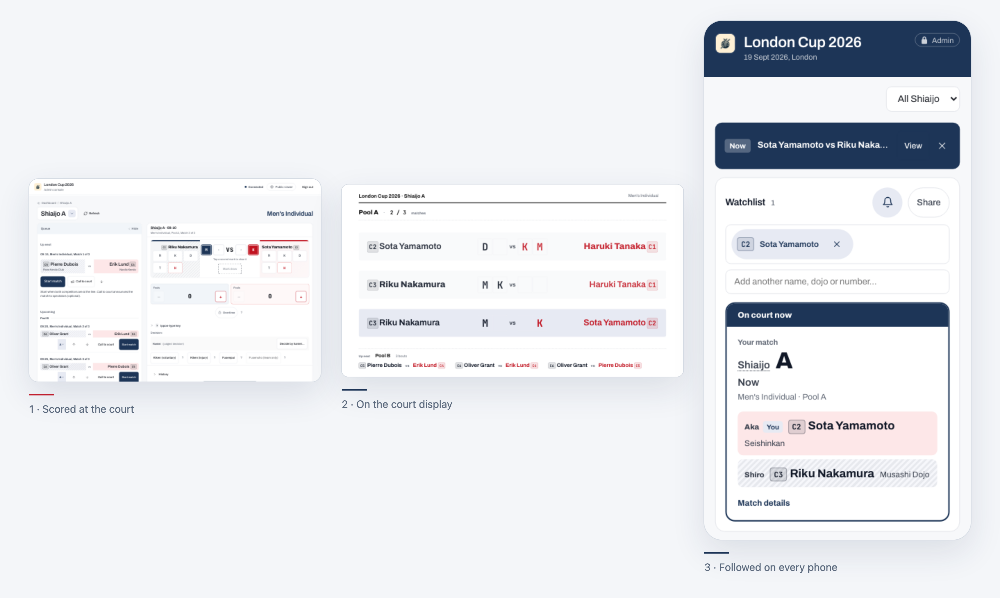
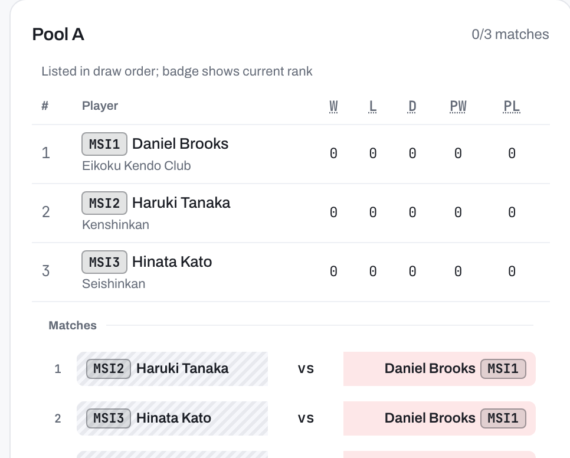
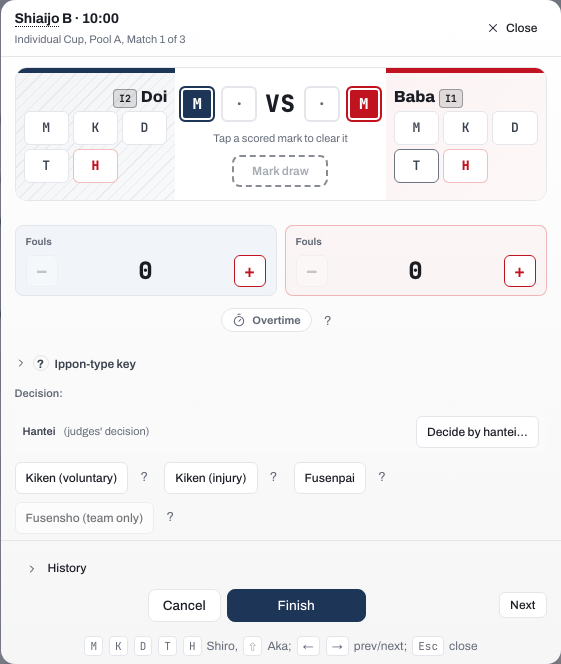
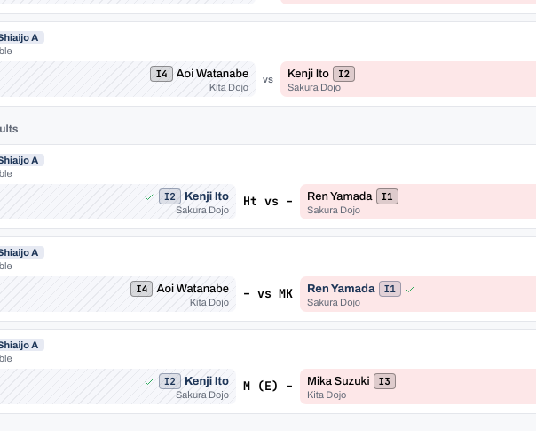
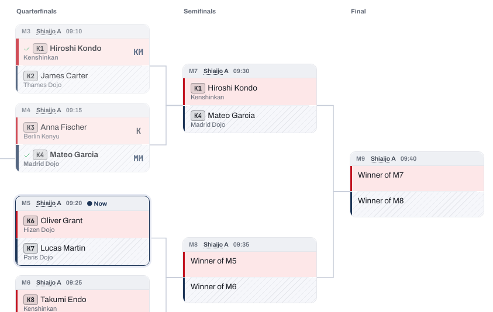
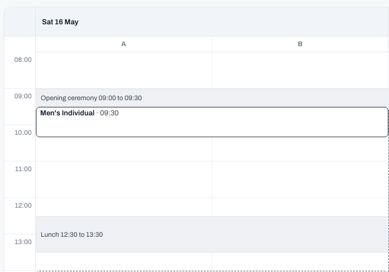
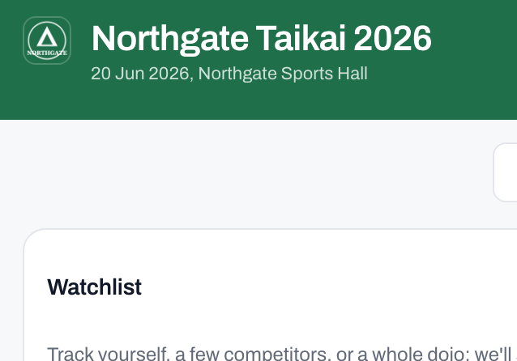
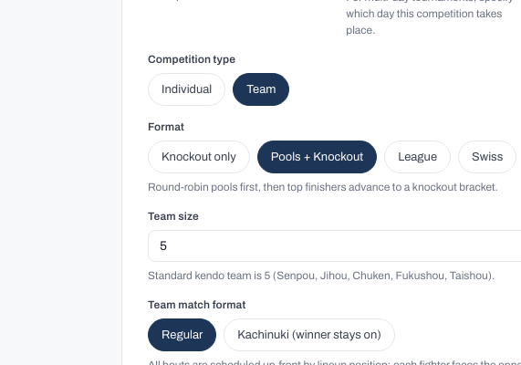

Your tournament, live on every screen
Score each bout at the court on a laptop or tablet. The court display and every phone in the hall show the score as it is entered. Made for kendo and naginata tournaments; engi, in pairs or solo, also suits kendo kata, jodo and iaido.
Free and open source

How it works
From the draw to the final, in one app
Load your participant list, draw pools and brackets, then run every court from a laptop or tablet. Results flow to the court displays and to phones as each point is scored.

1Draw
Pools and brackets from your list, with seeds and dojos kept apart.

2Score at the court
One laptop or tablet per court records points, fouls, encho and decisions.

3Everyone follows
Competitors and spectators see what is on now, what is next, and every result.
Features
Made for the day of the tournament
Built with tournament organisers, for court operators who may be new to the job.

The formats you run
Individual and team competitions, kachinuki, and engi kata for any art, in pairs or solo, such as iaido.

A schedule that adds up
See how long the day runs before you draw, spread competitions across courts, and plan the breaks.

Your branding
Your logo on the public and admin screens, your colours on the public page and the court displays, and sponsor images on the public page.

Rules per competition
Each competition keeps its own type, format, pool size, winners per pool, match durations and courts. Teams pick their size and regular or kachinuki matches.
Get started
Up and running in a few minutes
- Install bracket-creator on macOS, Windows or Linux. Prefer containers? Use the Docker option.
- Start it on the laptop at the desk.
- Open it in a browser, then share the laptop's network address with the courts and the hall.
# start the tournament app; --bind 0.0.0.0 # lets the courts and phones reach it bracket-creator mobile-app --folder ./tournament-data \ --bind 0.0.0.0 # then open http://localhost:8080 # on this laptop http://<laptop address>:8080 # on courts and phones
Other ways to work
Paper, a shared sheet, or a script
Paper only
Print the brackets and sheets from the app, and run the day with pens.
A shared Google Sheet
Upload the app's Excel workbook and fill results in from any device.
Command line
For developers: generate the same workbooks from a script.